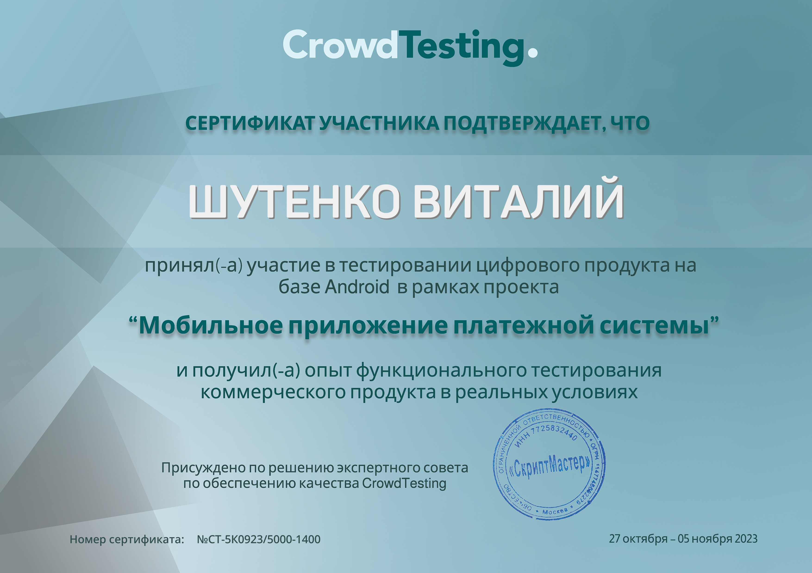
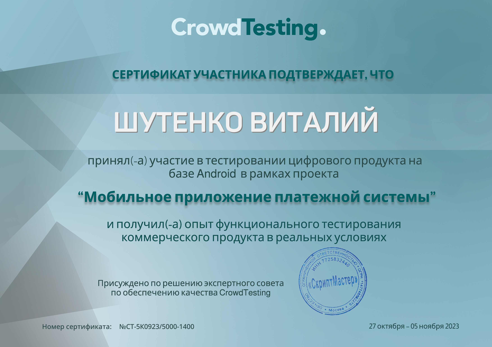
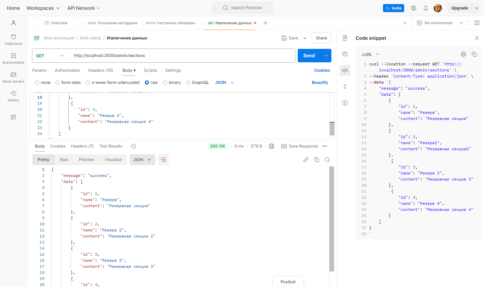
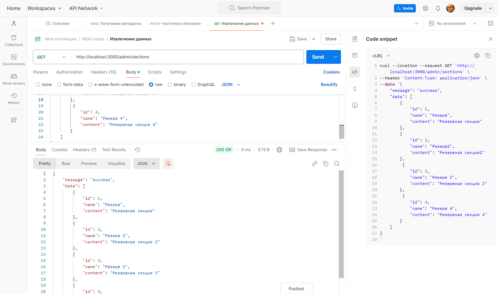

Удаленная работа и полная занятость
- Ответственность и внимание к деталям
- Умение работать в команде
- Стремление к непрерывному профессиональному развитию
- Аналитический склад ума и способность к критическому мышлению
- Высокая обучаемость и быстрая адаптация к новым инструментам и технологиям
- Способность к многозадачности и эффективному управлению временем
- Креативность и способность находить нестандартные решения
- Отличные коммуникативные навыки и умение ясно формулировать свои мысли
- Выполнение функционального и юзабилити-тестирования приложений, сайтов и устройств
- Тестирование мобильных платёжных систем
- Разработка тестовых сценариев и чек-листов
- Документирование ошибок и составление баг-репортов
Анализ
- Дымовое тестирование предоставленного ресурса и составление списка потенциальных тестовых сценариев и условий
Ручное функциональное тестирование
- Тестирование всех возможных форм ввода, полей и строк
- Тестирование на граничные значения
- Применение методик тест-дизайна
- Поведенческое тестирование
UX/UI тестированиме
- Проводил юзабилити-тестирование и тесты для улучшения пользовательского опыта веб-приложения
- Анализировал результаты тестирования и формировал рекомендации по доработке интерфейса
Мобильное тестирование
- Тестирование Android
- Муниципальное общеобразовательное учреждение - средняя общеобразовательная школа с. Карпенка Краснокутского района Саратовской области
- ГОУ НПО № 64
- ООО «Учебный комбинат «ПРОФКАДРЫ» по дополнительной образовательной программе «Азбука цифры. Специалист по тестированию в области информационных технологий»
- АНО ВО «Университет Иннополис» по дополнительной образовательной программе «Основы тестирования ПО»

- Тестирование цифрового продукта на базе Android в рамках проекта "Мобильная платёжная система". Проводил функциональное тестирование коммерческого продукта в реальных условиях
 

- Технологии веб-разработки: HTML, CSS, JSON, SQL
- Инструмент работы: Notepad++, WebStorm, GitHub
- Инструмент работы с базой данных: SQLite, DB Browser for SQLite
- Системы управления версиями: GitLab, GitHub
- Инструмент работы в сервисах по разработке интерфейса: Figma
- Инструмент для управления знаниями и документацией: GitBook
- Управление проектами: Jira
- Инструмент для управления задачами: Trello
- Инструмент для управления данными и планирования проектов: Google Docs, Google Sheets.
- Программные интерфейсы приложений: Postman, Swagger
- Инструменты разработчика: Developer Tools
- Управление тестированием ПО: Тест план, чек-листы, тест-кейсы, баг-репорты, отчёты о тестировании
Janus Worldwide
- Janus Worldwide один из крупнейших поставщиков лингвистических услуг в Центральной Европе
- Тестирование ERP (Enterprise Resource Planning)
- ERP это система управления проектами на основе 1C
- Официальный сайт: https://janusww.com
- Официальный сайт: https://janus.ru/
Paywall
- Тестирование сервиса Paywall.pw
- Paywall - это сервис для автоматической монетизации закрытых Телеграм-каналов и групп
- Официальный сайт: https://paywall.pw/
CScalp
- Проводил тестирование бета версии бесплатного терминала для трейдинга CScalp
- Официальный сайт: https://fsr-develop.ru/
 
